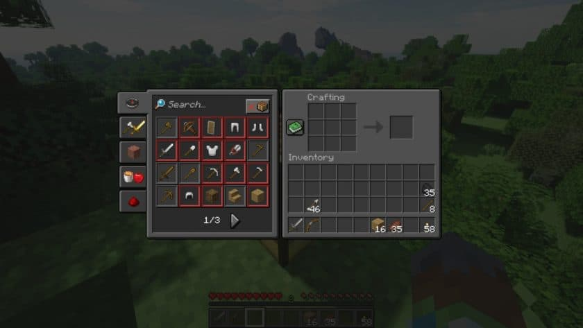
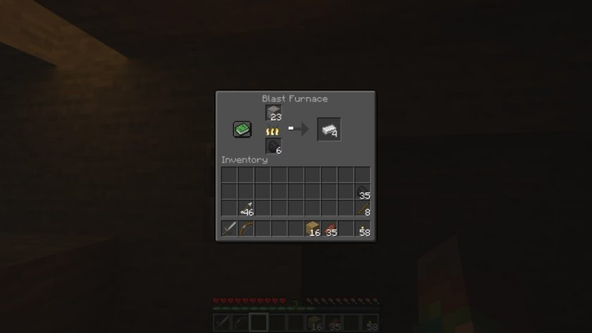

this page last time updated: 13 september 2024
Default Dark Mode Resource Pack 1.20 / 1.19
is unlike most of the other resource packs that you’ve stumbled upon. Instead of placing its focus on the in-game textures, the Default Dark Mode overhauls another massive part of Minecraft that is commonly neglected by texture pack creators – the game’s GUI. Contrary to what you might think, this isn’t the first resource pack of this kind. In fact, many others before it implemented some touchups and modifications to the user interface, but none of them to this extent. Default Dark Mode pays attention to every nook and cranny that the GUI itself contains, which means that you won’t notice any unfinished aspects that resemble the game’s original look. Even though the pixelated, comic-like appearance is one of the biggest differentiating factors of Minecraft, there’s no doubt that its interface is a tad bit outdated. It’s completely grey-scaled and the efforts to make it more interesting through the animated backgrounds don’t really bring out anything exciting to it. You may think that the interface doesn’t really impact the way the game itself plays, and you would be right. However, over time it’s normal for the whole presentation to become a bit tedious and grim, which could reduce your enjoyment during gameplay even if you aren’t realizing it. Another negative point is that each menu outline looks exactly the same, almost like it was copy-pasted.
The buttons, colors, etc – they don’t change regardless of whether you’re starting a new game or visiting the options menu. At first glance, the Default Dark Mode texture pack doesn’t seem to do much. You might notice that the starting menu buttons are a bit darker. However, once you get into the game, you’ll start to realize that you’re interacting with the GUI literally every few seconds. The inventory has a darker look with nicely contrasted letters that are easily differentiated between. Anvils, crafting tables, furnaces, enchanting tables, etc. – everything is completely overhauled. You’ll notice that the GUI’s edges are sharpened a bit to give them that sleek, modern look. You might be worried that you’ll have a hard time seeing your inventory if you’re on a mining expedition and located in a dark cave, but that’s not the case. The Default Dark Mode resource pack creators have paid attention to everything, and you won’t have to strain your eyes at all in order to distinguish between different items. Another massive advantage to this resource pack is that it won’t have any impact at all on your gameplay performance. Whereas the traditional resource packs change the blocks and resolution of in-game textures and therefore require better PC components, this one simply recolors the interface. It also has significant health benefits associated with it, as you’ll probably notice that your eyes won’t be straining as much due to the reduction in the blue light emission from the screen. Finally, the installation process is the same as with every other resource pack and there are many different versions for Java Minecraft releases, suitable for all types of gamers.
Default Dark Mode — Screenshots
 download down: